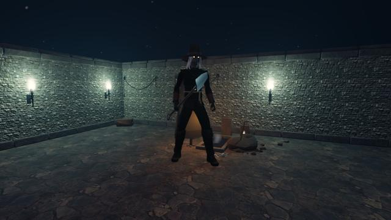

“Another one for the pit.”
- Family
- Undead
- Fights as
- Boss
- Damage
- Physical
- Life
- ×8
- Hits
- ×1.5
- Speed
- ×1
- When struck
- Grave dust
- Found in
- The Hollow Crypt
- Look
- A wide slouch hat over long grey hair, a rope belt and a dark coat, his eyes glowing lantern-gold; he fights with a grave spade
Phases
From the start
Uses Crushing Slam
Grave Dirt marks one of the group to run out
Uses Crushing Slam
Grave Dirt marks one of the group to run out
Below 50% life · summons 3 × Hollow Thrall
Uses Crushing Slam, Rending Cleave
Grave Dirt marks two of the group to run out
Uses Crushing Slam, Rending Cleave
Grave Dirt marks two of the group to run out
“Up! Up out of your beds!”
Encounter journal
Mordaunt dug the Order's graves for forty years. When the Hollowing took the crypt he went on digging, and he has never run short of the dead.
Spade Slam · Everyone
Slams the floor where a red circle grows. Step out of it.
Slams the floor where a red circle grows. Step out of it.
Grave Dirt · Everyone
Marks one of the group (two below half his life). After 5 s the dirt bursts on everyone within 3.5 m of the mark. Marked: step away from the others.
Marks one of the group (two below half his life). After 5 s the dirt bursts on everyone within 3.5 m of the mark. Marked: step away from the others.
Up From the Pit · Damage
At half his life three Hollow Thralls climb out of the graves. Cut them down before they swarm the healer.
At half his life three Hollow Thralls climb out of the graves. Cut them down before they swarm the healer.
